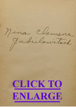

|
 |
[Charles Scribner's Sons brought out The Boy's
King Arthur; Being Sir Thomas Malory's History of King Arthur
and His Knights of the Round Table, "edited for boys with
an introduction by Sidney Lanier [and] illustrated by Alfred
Kappes," in 1880. According to a 1 January 1881 invoice from
Brown and Gross, Hartford Booksellers, someone in the
Clemens' household purchased a copy of the book, in all
likelihood the same copy that wound up in the hands of MT's
only grandchhild, the daughter of his daughter Clara (see
inscription below left). That copy wound up in the hands
of Rhio H. Barnhart, a Twain enthusiast who provided
the images on this page. [Good evidence that this is the original book are three marks in the margins of Lanier's text. These were made in the same distinctive purple pencil MT used to annotate many of the books he read, and were probably made by him -- though there's no way to tell when. MT himself implied he'd never read Malory until Cable recommended it to him in 1884. He could have forgotten that he'd earlier looked at this children's version -- or he could have consulted this children's version after 1884, once he'd begun work on Connecticut Yankee and wanted to refresh his ear for Malory's dialect. [Below is a chapter from Lanier's edition, but first the three passages marked by that purple pencil. By clicking on the icons to the right of each quotation you can see an image of the marked passage from the book itself.] |
| "I will be on horseback," said the knight. Then was Arthur wroth, and dressed his shield towards him with his sword drawn. When the knight saw that, he alight, for him thought no worship to have a knight at such avail, he to be on horseback, and he on foot, and so he alight and dressed his shield unto Arthur. And there began a strong battle with many great strokes, and so hewed with their swords that the cantels [pieces, of armor or of flesh] flew in the fields, and much blood they bled both, that all the place there as they fought was over-bled with blood, and thus they fought long . . . |
|
| Right so the king and he departed, and went unto an hermit that was a good man and a great leech. So the hermit searched all his wounds and gave him good salves; . . . |
|
|
Then Sir Beaumains bade the damsel so from him, and
then they put their spears in their rests, and came
together with all the might they had, and either smote
other in the midst of their shields, that the paytrels
[breast-plates], surcingles, and cruppers burst, and
fell both to the ground with the reins of their bridles in
their hands, and so they lay a great while sore astonished,
and all they that were in the castle and at the seige wend
[thought] their necks had been broken, and then many
a stranger and other said that the strange knight was a big
man and a noble jouster, "for or [ere] now we saw
never no knight match the red knight of the red lawns";
thus they said both within the castle and without. |
|
Launcelot as an ImpostorBy Sidney Lanier [This episode is in Chapter VIII of Book II of Lanier's abridged Morte Darthur. Lanier here follow's Malory's text very closely, but breaks up his long paragraphs into short ones, and supplies definitions of some of the most archaic terms in brackets. It's possible that MT had Lanier's text as well as Malory's by him while writing Connecticut Yankee.] |
|
There Sir Launcelot unarmed him, and set his harness by
him, and went to bed, and anon he fell on sleep. So soon
after there came one on horseback, and knocked at the gate
in great haste. And when Sir Launcelot heard this he arose
up, and looked out at the window, and saw by the moonlight
three knights came riding after one man, and all three
lashed on him at once with swords, and that one knight
turned on them knightly again, and defended him.
"Truly," said Sir Launcelot, "yonder one knight shall I help, for it were shame for me to see three knights on one, and if he be slain I am partner of his death." And therewith he took his harness and went out at a window by a sheet, down to the four knights, and then Sir Launcelot said on high [in a loud voice], "Turn you knights unto me and leave your fighting with that knight." And then they all three left Sir Kay, and turned unto Sir Launcelot, and there began great batttle, for they alighted all three, and struck many great strokes at Sir Launcelot, and assailed him on every side. Then Sir Kay dressed him for to have holpen Sir Launcelot. "Nay, sir," said he, "I will none of your help, therefore as ye will have my help let me alone with them." Sir Kay for the pleasure of the knight suffered him to do his will, and so stood aside. And then anon with six strokes Sir Launcelot had stricken them to the earth. And then they all three cried, "Sir knight, we yield us unto you as man of might matchless." "As to that," said Sir Launcelot, "I will not take your yielding unto me, but so that ye yield you unto Sir Kay the seneschal; on that covenant I will save your lives and else not." "Fair knight," said they, "that were we loath to do; for as for Sir Kay we chased him hither, and had overcome him had not ye been; therefore to yield us unto him it were no reason." "Well, as to that," said Sir Launcelot, "advise you well, for ye may choose whether ye will die or live, for and [if] ye be yielden it shall be unto Sir Kay." "Fair knight," then they said, "in saving our lives we will do as thou commandest us." "Then shall ye," said Sir Launcelot, "on Whitsunday next coming go unto the court of King Arthur, and there shall ye yield you unto Queen Guenever, and put you all three in her grace and mercy, and say that Sir Kay sent you thither to be her prisoners." "Sir," they said, "it shall be done by the faith of our bodies, and we be living." And there they swore, every knight upon his sword. And so Sir Launcelot suffered them to depart. And then Sir Launcelot knocked at the gate with the pommel of his sword, and with that came his host, and in they enetered, Sir Kay and he. "Sir," said his host, "I wend ye had been in your bed.:" "So I was," said Sir launcelot, "but I arose and leaped out at my window for to help an old fellow of mine." And so when they came nigh the light Sir Kay knew well that it was Sir Launcelot, and therewith he kneeled down and thanked him of all his kindness that he hath holpen him twice from the death. "Sir," said he, "I have done nothing but that I ought to do, and ye are welcome, and here shall ye repose you and take your rest." So when Sir Kay was unarmed he asked after meat, so there was meat fetched him, and he ate strongly. And when he had supped they went to their beds, and were lodged together in one bed. On the morn Sir Launcelot arose early, and left Sir Kay sleeping: and Sir Launcelot took Sir Kay's armor and his shield and armed him: and so he went to the stable and took his horse, and took his leave of his host, and so he departed. Then soon after arose Sir Kay and missed Sir Launcelot: and then he espied that he had his armor and his horse. "Now, by my faith, I know well that he will grieve some of King Arthur's court: for on him knights will be bold, and deem that it is I, and that will beguile them; and because of his armor and shield, I am sure that I shall ride in peace." And then soon after departed Sir Kay, and thanked his host. |